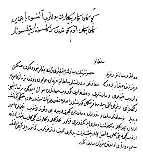

Belge 2: TKSA E.2457/24 – E.2457/25, veziriâzam ‘arzı
Belge 2
Özet:
Venedik birkaç yıldır 19 gemisiyle bir yerde bekliyor, kapudân paşa, kapudânlar ve yeniçeri kethüdasıyla görüşüyor.
Vâlide Sultan’ın (Turhan ?) emri:
“Venedik donanmasına karşı harekete geçmeli.”
Yorum:
Venedik donanmasının tehdidi karşısında âcil toplantı 1654–1656 yıllarına rastlar, donanmaya yeniçeri konulması kethüda ile görüşülüyor.